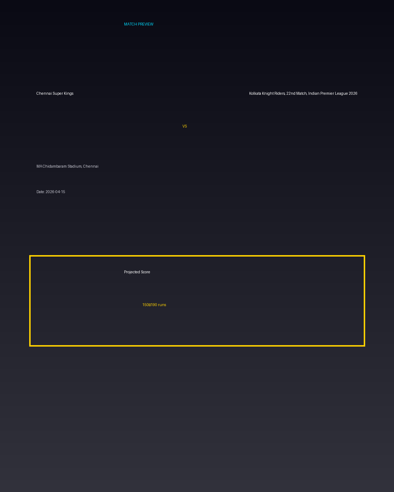

Chennai Super Kings vs Kolkata Knight Riders, 22nd Match, Indian Premier League 2026
Date: 2026-04-15
Venue: MA Chidambaram Stadium, Chennai


Form Guide
Chennai Super Kings: 🟩 🟥 🟩 🟩 🟥
Kolkata Knight Riders, 22nd Match, Indian Premier League 2026: 🟥 🟩 🟥 🟥 🟩
Pitch Report
Balanced wicket with moderate scoring conditions.
Projected Score
150–190 runs
Key Players
- Chennai Super Kings Key Batter — Batsman
- Chennai Super Kings Strike Bowler — Bowler
- Kolkata Knight Riders, 22nd Match, Indian Premier League 2026 Key Batter — Batsman
- Kolkata Knight Riders, 22nd Match, Indian Premier League 2026 Strike Bowler — Bowler
Advanced Win Probability
Chennai Super Kings: 64.3%
Kolkata Knight Riders, 22nd Match, Indian Premier League 2026: 35.7%
AI Match Prediction
Based on venue conditions, a projected scoring range of 150–190 runs, recent form (with Chennai Super Kings appearing slightly stronger), and the pitch profile ('Balanced wicket with moderate scoring conditions.'), this matchup appears to present Chennai Super Kings entering as clear favorites. Early momentum and top-order execution will likely determine the winner.
